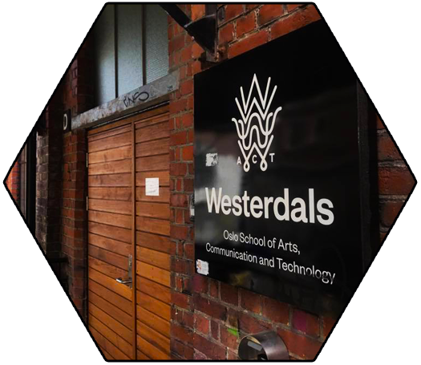
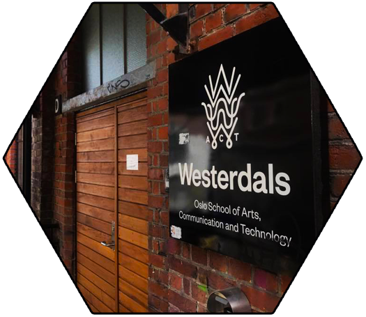

MakerSpace Vi på Westerdals er stolte over å presentere dere for vår egen lille MakerSpace rom hvor studenter kan komme innom og jobbe med sine egne/gruppe prosjekter. WOACT Social arrangerer ofte MakerSpace eventer som, 3D-printing, Dronebygging og mange flere. Vi ønsker å stimulere til kompetanseutvikling, nettverksbygging, samt et større fokus på gjenbruk og modifisering av forbrukerprodukter ikke minst vil studentene ha mulighet til å bygge sitt eget nettverk. Det er kun 5-8 MakerSpace i Oslo og vår MakerSpace er åpen for alle. Man vil ikke trenge å være student for å oppleve vår flotte lille MakerSpace.
Om dere har noen morsomme eller kule ideer om eventer vi burde lage så er det bare å sende oss en melding.
Vår Makerspace vokser hver dag. Vi kjøper inn nye verktøy som våre Studenter kan ha seg godt av. Vi er stolte av å eie vår egen 3D-printer, som studenter har mulighet til å prøve ut. Vi jobber aktivt med å bygge og kjøpe inn mer verktøy. Studentene har vært med å forme Makerspace til det den er i dag. Makerspace ønsker å være et lavterskel møtested med mange forskjellige aktiviteter og workshops. Er du en person som elsker å fikse på ting. Eller kanskje har en kul ide som dere vil bygge på? Ta gjerne kontakt med oss på WOACT Social og vi vil ordne slik at dere vil få tilgang. Vi holder interessante arrangementer hver uke.
Om du har interesse for dette så er det bare å logge seg inn på aktuelt og sjekke alle disse arrangementer Makerspace holder. Klikk HER
Har du noen kule tips? Gjerne Kontakt oss: